Base del espacio
Principios
Consentimiento explícito, privacidad total, respeto absoluto, normas claras y grupo reducido.
- Consentimiento claro.
- Respeto mutuo.
- Comunicación previa.
- Bienestar antes que rendimiento.
Libertad, respeto y conexión genuina con la naturaleza. Una propuesta elegante, filosófica y completamente diferente.
Nómada Naturista es una línea puntual, diferenciada y tranquila: naturaleza, privacidad, consentimiento, grupo reducido y cero sexualización. No es la parte extrema del catálogo; es una forma de bajar el ruido y vivir el entorno con respeto.
La línea naturista de Nómada Extremo no es un reclamo ni un experimento. Es una extensión natural de los valores del fundador: libertad de ser, respeto al cuerpo, integración plena con el entorno y ausencia de artificios innecesarios.
Esta propuesta se estructura como una línea puntual y diferenciada, programada con frecuencia mensual o bimestral, en entornos seleccionados específicamente y con una gestión cuidadosa de todos los aspectos relacionados con la privacidad, el consentimiento y la convivencia.
No es una actividad de iniciación espontánea ni está integrada en el catálogo general. Quien participa sabe exactamente qué va a encontrar, ha dado su consentimiento informado y comparte los valores del espacio.
Las actividades de esta línea son, por diseño, de baja complejidad técnica. El protagonista es el entorno y la experiencia de conexión. No la adrenalina.
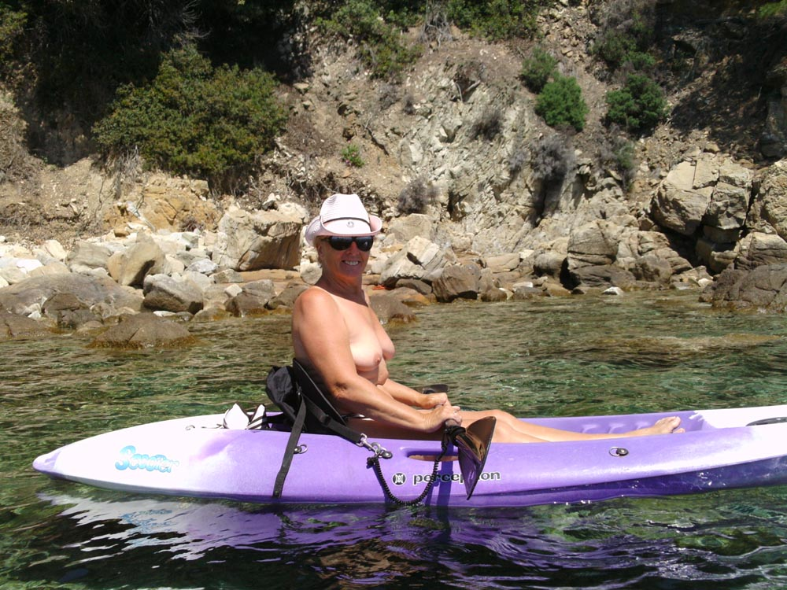
Travesías tranquilas por calas seleccionadas. Mar en calma, sin motor, sin ruido.
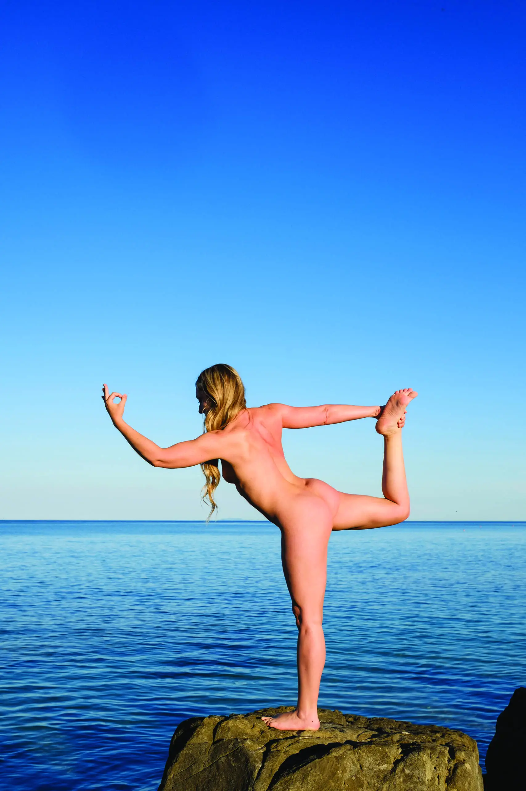
Sesiones de yoga exterior y meditación guiada en espacios naturales privados.
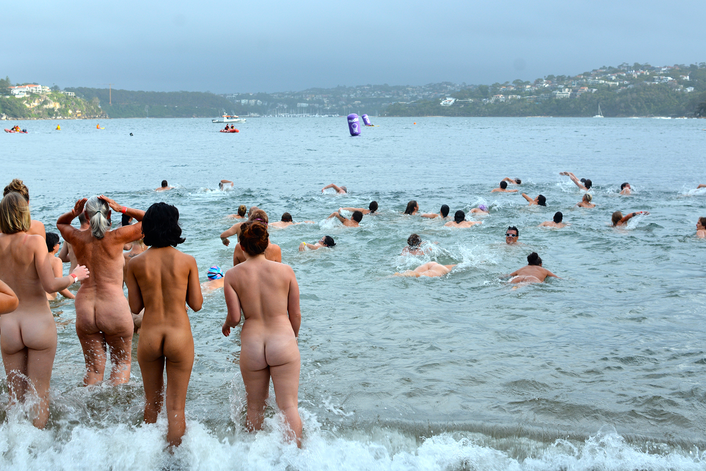
Baño en aguas tranquilas y calas vírgenes. Sin más. Sencillo y perfecto.
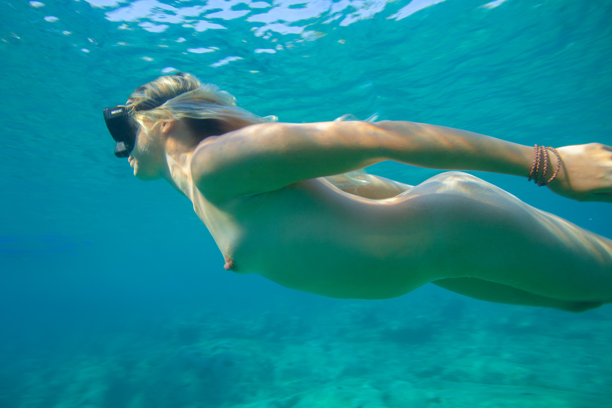
Exploración de fondos mediterráneos poco profundos con máscara, tubo y aletas.
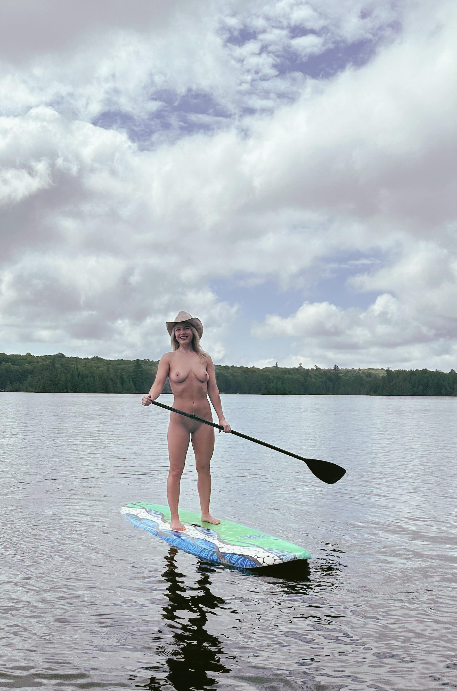
SUP relajado en aguas calmadas. Equilibrio, sol y silencio.
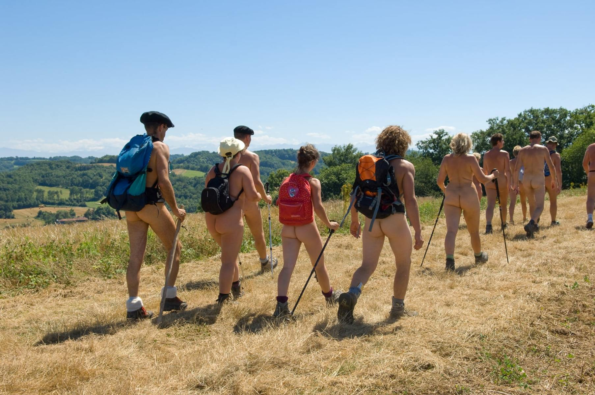
Rutas cortas e interpretativas en entornos seleccionados por su privacidad y belleza.
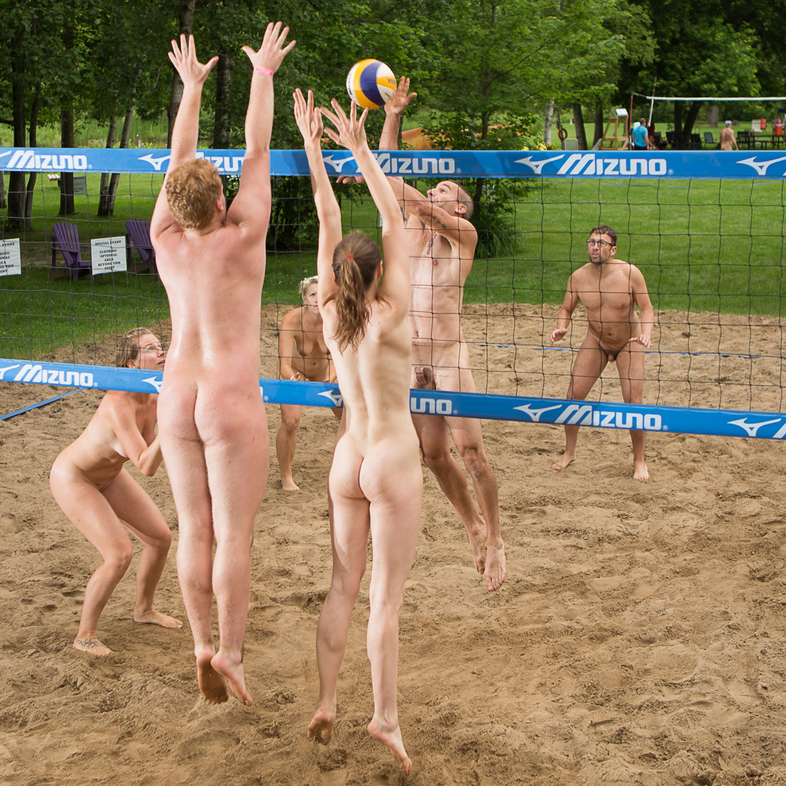
Partidos informales y espontáneos cuando el grupo y el espacio lo permiten.
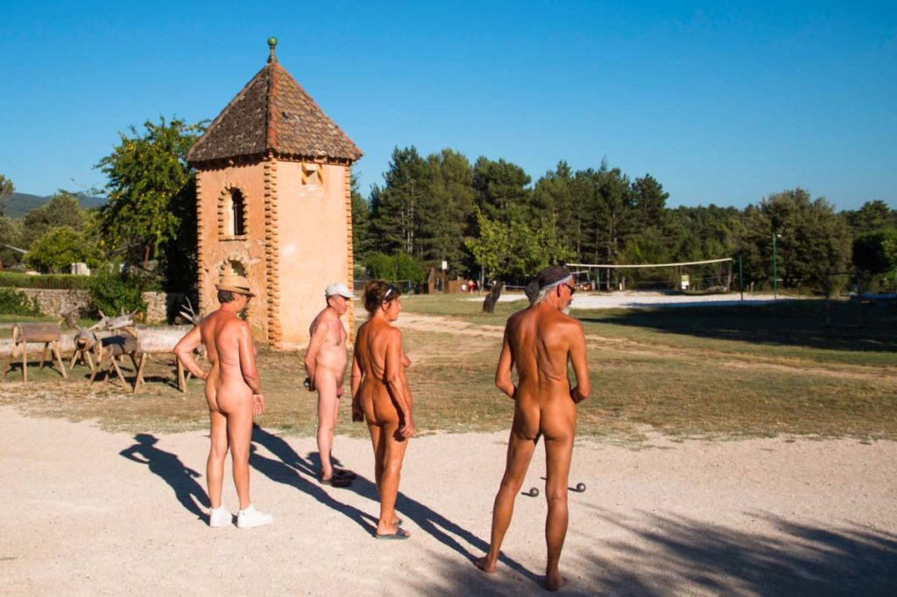
Un clásico para los momentos de pausa. Conversación, espacio y naturaleza.
La propuesta naturista se programa con una frecuencia de uno o dos días al mes, en entornos seleccionados por su privacidad y acceso controlado. Los grupos son pequeños —entre 6 y 12 personas— para garantizar la calidad de la experiencia y la coherencia del espacio compartido.
La participación requiere mayoría de edad, registro previo, lectura y aceptación de las normas del espacio, consentimiento informado y confirmación expresa. No se acepta participación espontánea no registrada.
Solicitar información privada →Una línea tranquila, respetuosa y diferenciada para vivir la naturaleza con libertad, privacidad y consentimiento claro.
Nómada Naturista no es una actividad extrema ni una experiencia improvisada. Es un espacio cuidado, con normas claras, grupos pequeños y actividades suaves, diseñado para disfrutar del entorno natural desde el respeto, la calma y la confianza.
Consentimiento explícito, privacidad total, respeto absoluto, normas claras y grupo reducido.
Actividades suaves y respetuosas: kayak, SUP tranquilo, snorkel, natación en cala, senderismo consciente, yoga, movilidad, petanca, baño al amanecer y relajación junto al mar.
El objetivo no es demostrar nada, sino bajar el ritmo y conectar con la naturaleza.
No se plantean actividades técnicas de alto riesgo, saltos extremos, ferratas, barrancos técnicos, zonas concurridas ni situaciones sin privacidad o consentimiento claro.
La prioridad es la calma, la privacidad y la seguridad del grupo.
Cada persona decide su nivel de participación y su ritmo.
No se permite grabar ni fotografiar a ninguna persona sin autorización expresa, clara y previa.
La participación requiere información previa, aceptación de normas y confirmación voluntaria.
Experiencias puntuales, grupo pequeño, registro previo, punto de encuentro discreto, briefing de convivencia, actividad suave y cierre tranquilo.
Se revisan entorno, accesos, temperatura, hidratación, protección solar, calzado, privacidad y estado general del grupo.
El/la coordinador/a de experiencias naturistas y bienestar outdoor coordina el briefing, la privacidad, el ritmo y la atención inmediata ante cualquier incomodidad, sin dirigir la experiencia de forma invasiva.
No busca exhibición, sino presencia. No busca rendimiento, sino calma. Es una forma sencilla, consciente y libre de volver al cuerpo, al mar, al sol y al entorno.
Seis propuestas distintas para compartir el mar y el paisaje desde el respeto, la privacidad y la libertad de participar.
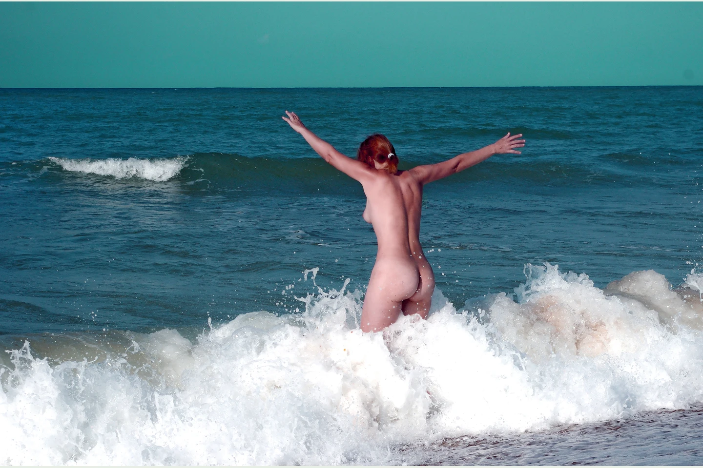
NaturismoBaño tranquilo · costa · conversación
Una mañana sin prisa en una cala, para disfrutar del agua y compartir el entorno.
Personas adultas, consentimiento y privacidad. Actividad ajustada al entorno y al estado del mar.
Código de convivencia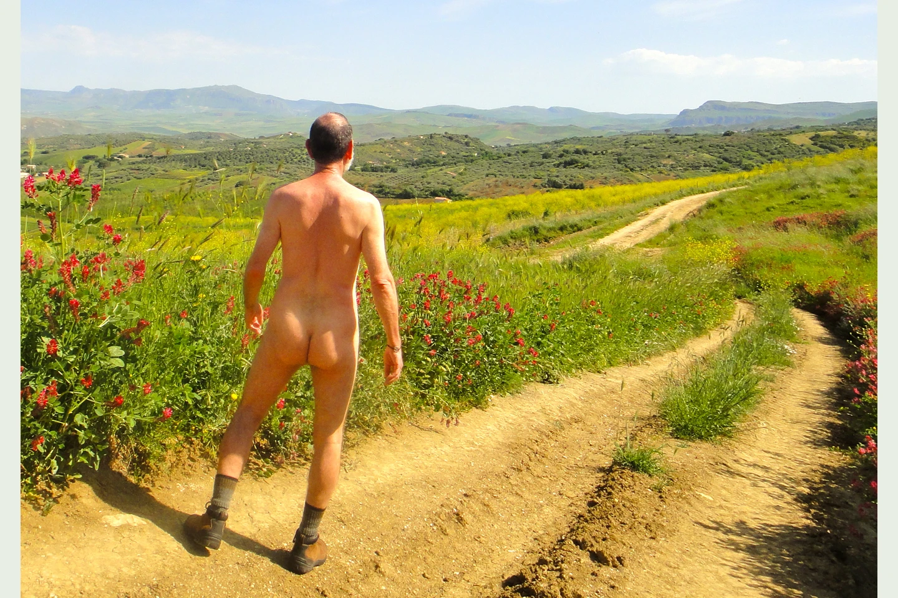
NaturismoSenderismo suave · interpretación
Una ruta de baja dificultad en un entorno adecuado al naturismo, con pausas y lectura del paisaje.
Personas adultas, consentimiento y privacidad. Actividad ajustada al entorno y al estado del mar.
Código de convivencia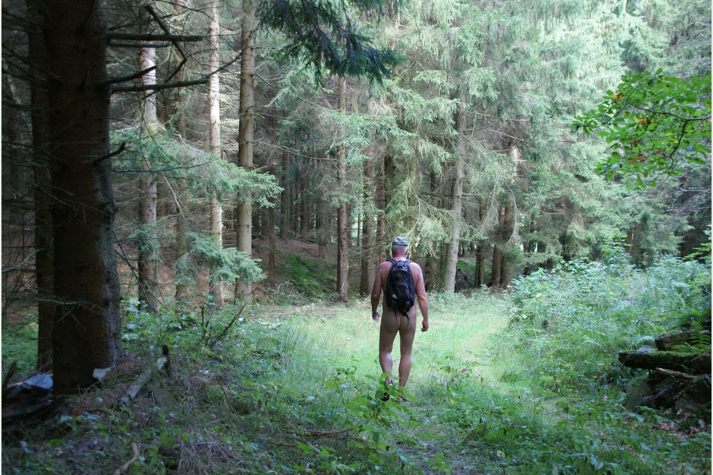
NaturismoRuta suave · baño · convivencia
Una jornada para caminar, compartir una pausa y disfrutar de un baño opcional en un entorno adecuado.
Personas adultas, consentimiento y privacidad. Actividad ajustada al entorno y al estado del mar.
Código de convivencia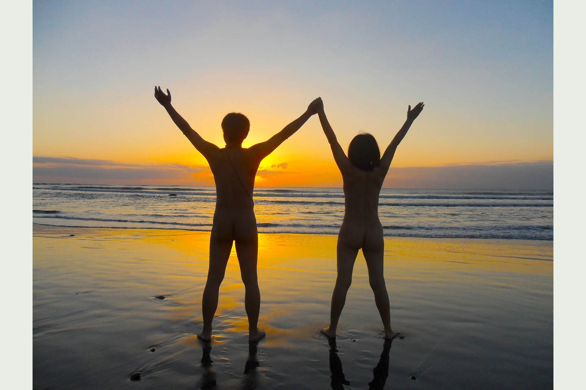
NaturismoContemplación · baño al alba
La costa a primera hora: una pausa compartida frente al mar y un baño opcional.
Personas adultas, consentimiento y privacidad. Actividad ajustada al entorno y al estado del mar.
Código de convivencia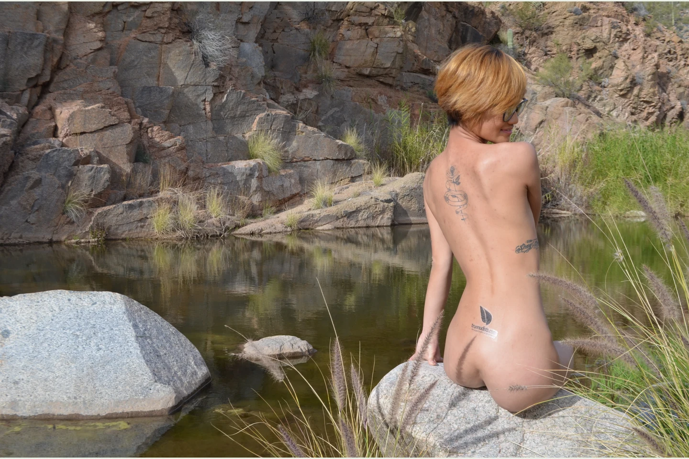
NaturismoPausa consciente · conversación
Un encuentro de ritmo tranquilo para observar el entorno, descansar y conversar con respeto.
Personas adultas, consentimiento y privacidad. Actividad ajustada al entorno y al estado del mar.
Código de convivencia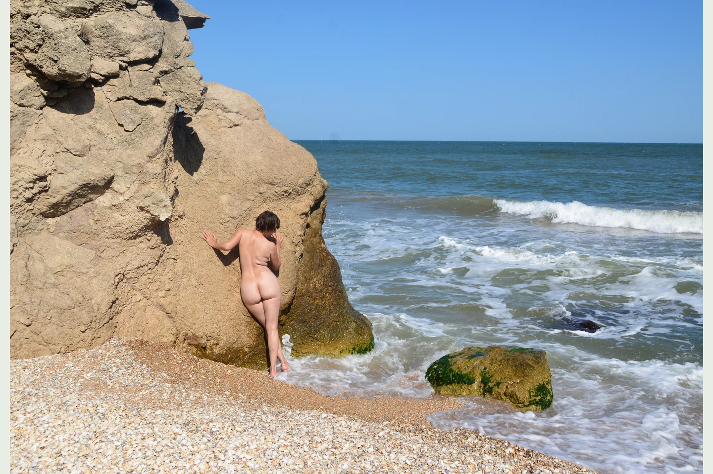
NaturismoSnorkel · observación del litoral
Una exploración suave de aguas poco profundas para observar el fondo y disfrutar del mar sin prisa.
Personas adultas, consentimiento y privacidad. Actividad ajustada al entorno y al estado del mar.
Código de convivenciaFotografías de referencia tomadas en otros lugares; ilustran el naturismo y no documentan actividades de Nómada Extremo en Águilas.
Cada persona vive el naturismo de forma distinta. Estas propuestas invitan a la calma y la convivencia, sin prometer efectos sobre la salud.
Tiempo para bajar el ritmo y disfrutar del entorno.
Atención al paisaje, al agua y a las sensaciones del momento.
Participación voluntaria y respeto de los límites personales.
Un espacio de convivencia sin juicios sobre el cuerpo.
Una pausa del ruido cotidiano, sin expectativas de rendimiento.
Conversación, escucha y cuidado del espacio compartido.